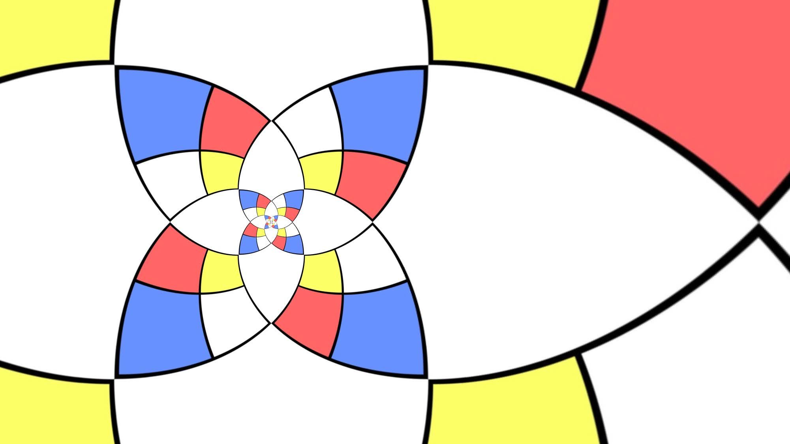

|  |
Immerse yourself in SolarPunk Fiction, a subgenre of speculative literature that combines a future of renewable energy, sustainable living, and innovative technology with a focus on community and nature. This is a realm of storytelling that is not only hopeful but also invitational, encouraging readers to remix and adapt its ideas into real-world solutions.
At its core, SolarPunk Fiction values human ingenuity and the capacity for positive change, painting a future that actively resists dystopian narratives. It's a form of literature that turns its gaze towards the possibilities of a more equitable and green future, where human potential and the power of the natural world work together in harmony.
From urban vertical gardens and clean energy to community-driven innovation and beyond, SolarPunk Fiction beckons us to a world that could be. It's a celebration of resilience, sustainability, and the profound connection we share with the Earth. In this collection, you'll find stories that not only entertain but also inspire, challenge, and provoke thought about what our future could look like if we choose to make it so.